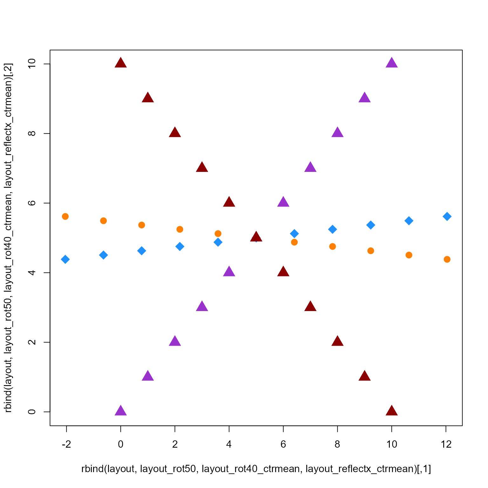

Rotate numeric coordinates, optionally after reflecting coordinates along one or more coordinate axes.
Arguments
- x
matrixwith 2 or more columns.- degrees
numeric value indicating the degrees to rotate layout coordinates, where 360 degrees is one complete rotation.
- reflect
characterstring indicating one or more axes to reflect coordinates, which flips the position of coordinates along that axis. It is usually called to flip x-axis or y-axis coordinates, for example withreflect="x"orreflect=1. Input is handled as follows:if
reflectcontains"none", then reflect is applied to none of the coordinate axes, therefore the defaultreflect=c("none", "x", "y", "z")will apply no reflection.characterinput:reflectvalues are matched tocolnames(x). When there are nocolnames(x), thenreflectvalues ofc("x", "y", "z")are automatically recognized as columnsc(1, 2, 3)respectively.integerinput is treated as a vector of column index positions, for examplereflect=c(2)will reflect values on the second coordinate column.
- center
numericcoordinates to use as the center, orcenter=NULLto calculate the center usingcenter_rule.- center_rule
characterstring indicating which rule to apply to determine the center coordinates whencenter=NULL. Note that it has little effect on most downstream plotting assuming the plot function adjusts x- and y-axis ranges to the data range, but may modify the axis ranges as a result."origin"uses c(0, 0);"mean"uses the mean of each axis;"median"uses the median of each axis;"min"uses the minimum of each axis;"max"uses the max of each axis.
- rotation_axes
integervector indicating which axis coordinates to rotate, by defaultc(1, 2)uses the first two axes inx. Note thatrotation_axesmust represent columns present in x.- ...
additional arguments are ignored.
Details
This function rotates coordinates in two axes, by the angle
defined in degrees. It optionally reflects coordinates in
one or more axes, which occurs before rotation.
Note that the reflect is applied before degrees.
Rotation code kindly contributed by Don MacQueen to the maptools
package, and is reproduced here to avoid a dependency on maptools
and therefore the sp package.
See also
Other jam utility functions:
ashape(),
avg_angles(),
avg_colors_by_list(),
cell_fun_bivariate(),
collapse_mem_clusters(),
colorRamp2D(),
curateIPAcolnames(),
deconcat_df2(),
display_colorRamp2D(),
enrichList2geneHitList(),
find_colname(),
find_enrich_colnames(),
get_hull_data(),
get_igraph_layout(),
gsubs_remove(),
handle_igraph_param_list(),
isColorBlank(),
make_legend_bivariate(),
make_point_hull(),
mem_find_overlap(),
order_colors(),
rank_mem_clusters(),
summarize_node_spacing(),
xyAngle()
Examples
layout <- cbind(0:10, 0:10);
layout_rot50 <- rotate_coordinates(x=layout, degrees=50);
layout_rot40_ctrmean <- rotate_coordinates(x=layout, degrees=40, center_rule="mean");
layout_reflectx_ctrmean <- rotate_coordinates(x=layout, reflect="x", center_rule="mean");
plot(rbind(layout, layout_rot50, layout_rot40_ctrmean, layout_reflectx_ctrmean),
col=rep(c("darkorchid", "darkorange1", "dodgerblue", "red4"), each=11),
pch=rep(c(17, 20, 18, 17), each=11),
cex=2);
